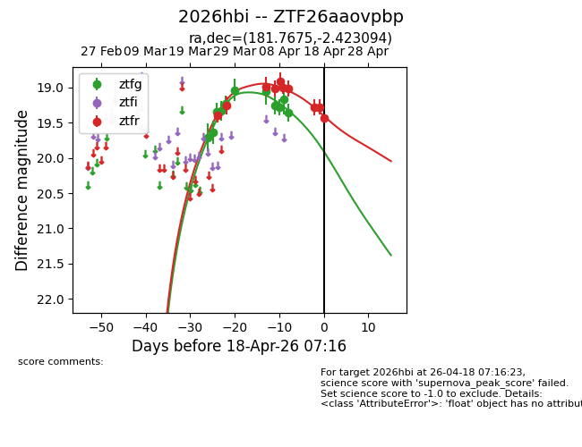
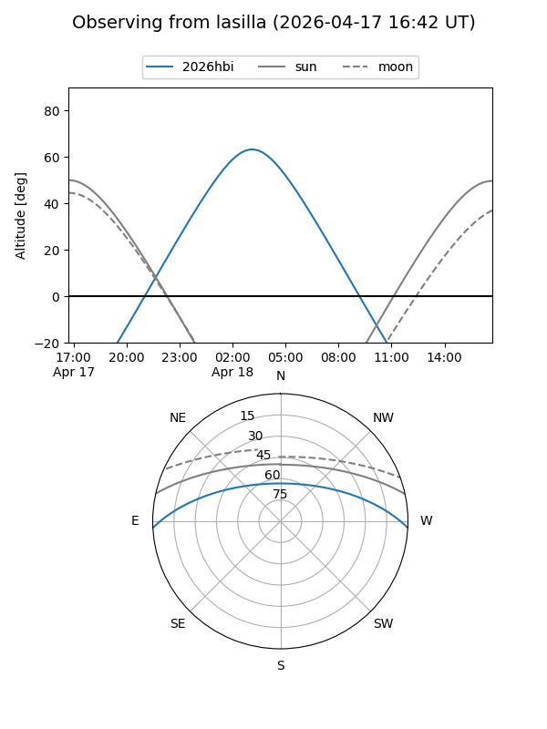
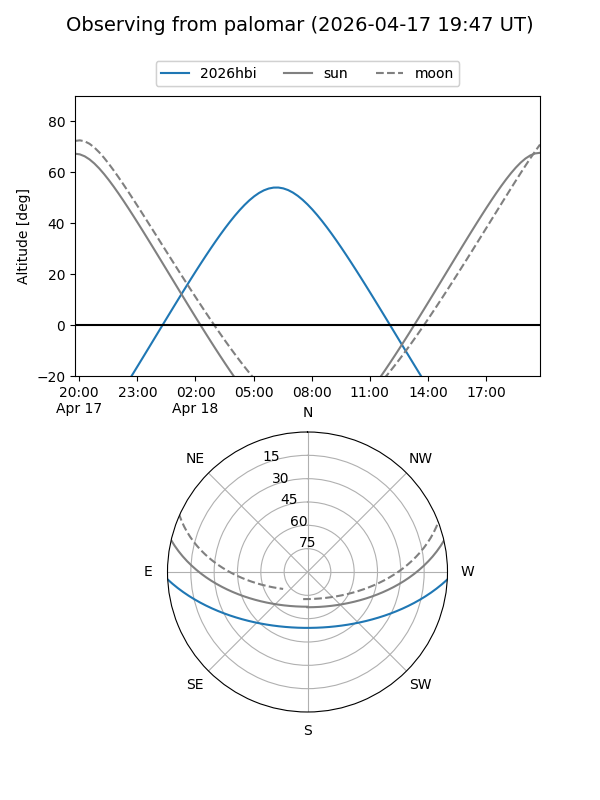
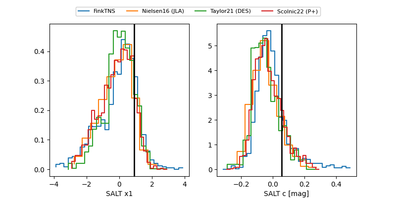

2026hbi
Target 2026hbi at 2026-04-18 07:21
Aliases and brokers:
FINK: link
Lasair: link
ALeRCE: link
TNS: link
YSE: link
alt names
ZTF26aaovpbp (ztf,fink_ztf)
2026hbi (tns,yse)
Coordinates:
equatorial (ra, dec) = 181.7675,-2.42309
equatorial (HMS+DMS) = 12:07:04.20,-02:25:23.14
galactic (l, b) = (281.3003,+58.57282)
Flags:
Photometry:
last ztfg=19.35, ztfr=19.43
11 ztfg, 10 ztfr detections
Lightcurve

Visibility


Additional plots
